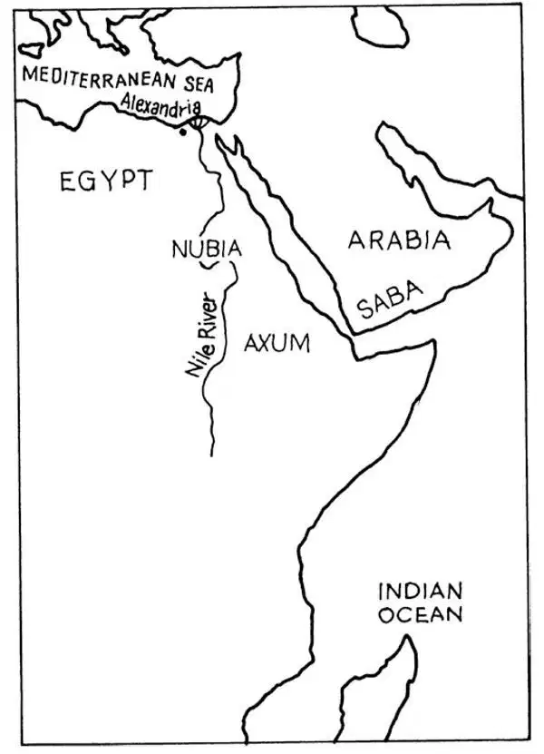

44
A Christian Kingdom in Africa
非洲的一个基督教王国

BY the time of the Roman Emperor Constantine, Christianity had been taught all around the Roman Empire; in countries like Italy and Greece in southern Europe; in the countries like Syria and Turkey in the Middle East; and in countries like Egypt and Libya in North Africa. One of the most important early Christians, St. Augustine, was bishop of the North African city of Hippo. He was a famous teacher and writer. The very first monks lived in Egypt, usually out in the desert. The Egyptian city of Alexandria, which Alexander the Great had built so long ago, became important in the Christian world. The bishops of Alexandria were leaders in the early church.
Missionaries traveled beyond the Roman Empire, not only north into Europe but also south into Africa. Some of these missionaries went south of Egypt into Nubia and Axum. Nubia lay directly south of Egypt and today is called Sudan. Axum is southeast and is part of the modern nation of Ethiopia. You already know that Nubia has a history going back as far as Egypt's history. Axum also has a long history that I will tell you now.
Axum was located on the shore of the Red Sea. It is just a short distance across the water from Arabia. A thousand years before Christ, some people from Saba on the tip of Arabia migrated to Axum, settled, and mixed with the people there. Later, the kings of Axum conquered and ruled Saba. You can see these two peoples had a lot to do with each other over the years.
One Queen of Sheba (a place also known as Saba) is said to have gone to Jerusalem at the invitation of the Hebrew King Solomon. Perhaps she was one of his wives. In any case, there is a legend that has been told for many years in Ethiopia that the kings there are descended from King Solomon and the Queen of Sheba. Even the last king of Ethiopia, Haile Selassie, who ruled until 1974, claimed that the famous Biblical king and queen were his great, great, great, great… grandparents.
Because of its long seacoast, Axum became a trading center. Ships from Axum sailed north along the Red Sea to Egypt, south in the Indian Ocean along the east coast of Africa, and across that ocean all the way to India. The ships carried valuable goods like gold and ivory and spices. Axum also sent caravans across the desert to trade with places that could not be reached by water. Axumite merchants traded with the Roman Empire. Merchants from Rome and Greece came to live in Axum to conduct business there. Axum became a very rich kingdom. The kings wore luxurious robes and rode in chariots pulled by elephants. One king of Axum is particularly famous. This is King Ezana, who came to the throne around 330 A.D., just around the time of the Roman Emperor Constantine.
Like most ancient rulers, King Ezana was a military leader. He extended his empire by conquering his neighbors. But he is best known because he converted to Christianity. He was converted by two young Christians from Syria who were brought as slaves to Axum. Legend has it that these young men either were shipwrecked or were captured by pirates in the Red Sea. Since they knew how to write, they were brought to the king's court to work as scribes. One worked particularly hard to convert King Ezana. When he succeeded, Ezana made Christianity the official religion of his nation. The Christians of Axum were in close contact with the Christians of Alexandria, Egypt. At first, Christians in both Egypt and Axum held their services in Greek. Later they began to worship in their own languages, Coptic in Egypt and Ge'ez in Axum. The king of Axum had the Bible translated into Ge'ez.

Northeastern Africa （非洲东北部）
Axum remained a Christian kingdom through the centuries. In the Middle Ages, when the Christian countries in Europe were building the great cathedrals that you will read about in later chapters, the kings of Axum were also building great churches. Some of these are unlike any other churches that you will ever see. One king, a man named Lalibela, sent stone carvers into a remote mountain area. First the carvers cut deep down into underground rock and made trenches. Then the workers were lowered into the trenches to carve the actual churches out of the solid rock. One has the shape of a cross. The largest is more than one hundred feet long. Inside, beautiful paintings with bright colors and gold leaf decorate the walls and altars. If you travel to Ethiopia, you can still visit these churches today.
Several centuries after the time of King Ezana, Axum was cut off from most of the Christian world. Arabs, whom you will read about in the next chapter, conquered all of North Africa and established a new religion called Islam Some people in Egypt continued to be Christians, but most Egyptians and also many Nubians were converted to Islam. Axum was cut off from many of its old trade routes, so Axum's wealth declined. The country did manage to preserve its independence and its religion. Because they were so far away, Europeans lost track of the Ethiopian Christians. But they were still there. And now we have rediscovered their history.
【中文阅读】
到了君士坦丁做罗马皇帝的时候，基督教已经在整个罗马帝国传播开来，包括南欧国家像意大利和希腊，中东国家像叙利亚和土耳其，以及北非国家像埃及和利比亚。早期基督徒中最重要的一位人物——圣奥古斯丁，是北非希波城的主教。他是一位著名的教师和作家。非洲最早的修道士生活在埃及，通常在偏僻的沙漠地带。埃及的亚历山大城，就是亚历山大大帝很早之前建造的那座城，在基督教世界中这时变得很重要。亚历山大城的主教都是早期教会的领袖。
有些传教士旅行到罗马帝国以外的地方去布道，不仅向北深入欧洲地区，也南下进入非洲。一些传教士从埃及的南边进入努比亚和阿克苏姆。努比亚位于埃及正南边，现在叫苏丹。阿克苏姆在东南方，是今天埃塞俄比亚的一部分。你已经知道努比亚的历史跟埃及的一样久远。阿克苏姆也有一段悠久的历史，我现在就作 介绍。
阿克苏姆位于红海岸边，和对岸的阿拉伯半岛相距很近。在公元前1000年，一些来自阿拉伯半岛西南端赛伯伊地区的人迁移到了阿克苏姆，在那里定居下来，与当地人交往融合在一起。后来，阿克苏姆的国王征服并统治了赛伯伊。你能看出，在这些年中，这两个民族的人你来我往，关系十分紧密了。
据说，示巴（也叫赛伯伊）的一位女王曾受到以色列国王所罗门的邀请去了耶路撒冷，她可能是所罗门的妻子之一。不管怎样，在埃塞俄比亚有一个流传多年的传说，即本国的国王都是所罗门王和示巴女王的后代。就连在1974年结束其统治的埃塞俄比亚最后一位国王海尔•塞拉西，也声称所罗门这位圣经中著名的国王和示巴女王是他的曾曾曾曾……祖父母。
阿克苏姆有很长的海岸线，因此成了贸易中心。来自阿克苏姆的船只向北沿红海航行到达埃及，在印度洋向南、沿非洲的东海岸航行，再一路穿过印度洋到达印度。这些船满载着贵重的物品，如黄金、象牙和香料等。阿克苏姆还派出旅行队穿过沙漠，和那些不能通过水路到达的地区进行贸易往来。阿克苏姆的商人们和罗马帝国做买卖，而来自罗马和希腊的商人也来阿克苏姆居住，在当地经商。阿克苏姆成了一个非常富有的王国。国王们都身穿奢华的长袍，乘坐由大象拉的车。有个阿克苏姆国王特别有名，他就是国王埃扎纳，在大约公元330年登基，差不多和罗马皇帝君士坦丁属于同一时期。
跟大多数古代的统治者一样，国王埃扎纳是一位军事领袖，他不断地征服周边国家，扩大自己的王国。但是，他最为知名的是皈依基督教。他是因为受到两个来自叙利亚的、年轻的基督徒的影响而皈依基督教的，这两个年轻人是被当成奴隶带到阿克苏姆来的。据传说，这两个年轻人要么遭遇了海难，要么是被红海的海盗俘获的。因为他们会写字，所以被带到王宫做抄写员。其中一个年轻人煞费苦心地去转变国王埃扎纳的信仰。当他使埃扎纳皈依基督教以后，埃扎纳把基督教定为国家的官方宗教。阿克苏姆的基督徒同埃及亚历山大城的基督徒联系密切。最初，埃及和阿克苏姆的基督徒都用希腊语举行宗教仪式。后来，他们开始用自己的语言进行礼拜活动，埃及人是用科普特语，而阿克苏姆人则用吉兹语。阿克苏姆的国王还让人把圣经翻译成吉兹语。
数百年过去了，阿克苏姆依然是信仰基督教的王国。在中世纪，欧洲的基督教国家都在建宏伟的大教堂，关于这些教堂，你会在后面的章节中读到。阿克苏姆的国王们也在建大教堂，其中一些教堂和你以后所见的任何教堂都不一样。一位名叫拉利贝拉的国王派了众多石匠进入边远的山区。首先，石匠把地面下的岩石凿开，向下凿出一道道深沟；然后，工匠们被放进这些深沟里，他们要在这里把这整个岩体雕凿出真正的教堂。有一个教堂被雕凿成十字架形的，最大的教堂有100多英尺长。在教堂内部，有颜色鲜艳的美丽图画和金箔装饰着墙面的圣坛。如果你现在到埃塞俄比亚旅游，还能看到这些教堂呢！
在埃扎纳王朝以后的几百年，阿克苏姆与基督教世界中的大多数国家中断了联系。在下一章中你就会读到，阿拉伯人征服了整个北非，创立了一个新的宗教，叫 做伊斯兰教。一些埃及人继续信仰基督教，但大多数埃及人，还有很多努比亚人都转而信奉伊斯兰教了。阿克苏姆与很多过去的贸易路线隔绝了，这样它的财富就渐渐枯竭了。这个国家的确保住了自己的独立和自己的宗教，因为这里的基督徒离基督教世界太远了，欧洲人最终失去了与埃塞俄比亚基督徒的联系。但是，他们当时并没有消失，现在我们重新发现了他们的历史。